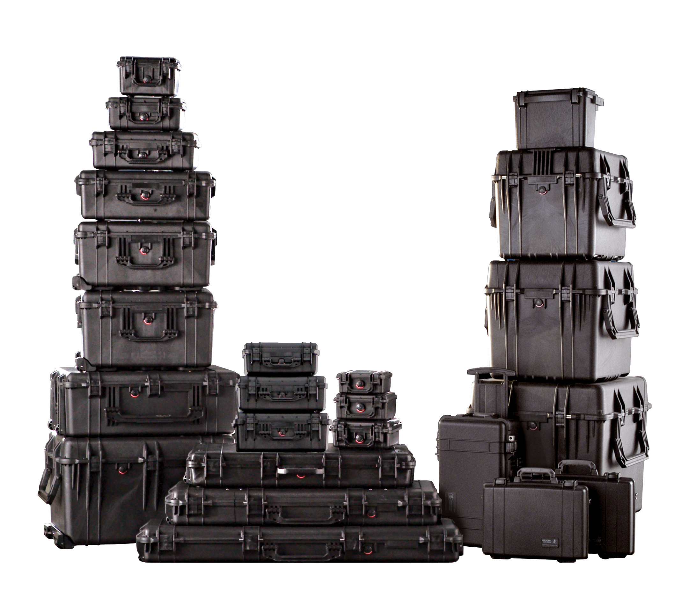

Case Marking
A Case Study
Other case systems around the world


Let’s back up for a second.
| ### “Jony chased Dieter” |
 |
How a language marks who did what to whom
“Jony chased Dieter”
“Kevin waved to Niloo”
“Niloo waved to Kevin”
“Will ate his tofu wistfully”
We call these morphemes “case markers”
Nominative Case - “The Subject”
Accusative Case - “The Object”
Tacking morphemes onto words to indicate their role in the sentence
sobaka vidye-la koshk-u
dog.NOM see-SG.FEM.PST cat-ACC.FEM
“The dog saw the cat.”
koshka vidye-la sobak-u
cat.NOM see-SG.FEM.PST dog-ACC.FEM
“The cat saw the dog.”
Ya tyebya vizh-u
I.NOM you.ACC see-1SG
“I see you”
Ti myenya vid-yesh
you.NOM I.ACC see-2SG
“You see me”
If we put the sentence “Niloo hugged the turtle” into Russian, the proper cases would be…
Niloo - NOM, Turtle - ACC
Niloo - ACC, Turtle - NOM
Niloo - NOM, Turtle - NOM
Niloo - ACC, Turtle - ACC
If we put the sentence “Niloo hugged the turtle” into Russian, the proper cases would be…
Niloo - ACC, Turtle - NOM
Niloo - NOM, Turtle - NOM
Niloo - ACC, Turtle - ACC
Nominative and Accusative cases are really common!
Der Hund beißt den Mann.
The-NOM dog bite-3sg the-ACC man.
‘The dog bites the man.’
Der Mann beißt den Hund.
The-NOM man bite-3sg the-ACC dog.
‘The man bites the dog.’
| Singular Nominative | Plural Nominative | Singular Accusative | Plural Accusative | |
|---|---|---|---|---|
| 1st | I | we | me | us |
| 2nd | you | y’all | you | y’all |
| 3rd | he/she | they | him/her | them |
| * I see him * I-NOM see he-ACC |
| * He sees me * He-NOM see-3sg I-NOM |
So, Nominative and Accusative cases are really useful!
Nominative Case - “The Subject”
Accusative Case - “The Direct Object”
Dative Case - “The Indirect Object or Recipient”
Genitive Case - “The Possessor (and more)”
Locative Case - “The Location (and more)”
Instrumental Case - “The Tool (and more)”
Marks the indirect object, or recipient of an item
Kevin dayot tsvet-i Lis-ye
Kevin-NOM give.3sg Flowers-ACC.PLUR Lisa-DAT
“Kevin gave Lisa flowers”
Enchilad-i mne da-la Niloo
Enchilada-ACC.PLUR 1sg.DAT give-PAST.FEM Niloo-NOM
“Niloo gave me Enchiladas”
Ya pomoga-yu Kevinu
1sg.NOM help-present.1sg Kevin-DAT
“I’m helping Kevin”
Mne zvoni-l Barack Obama
1sg-DAT call-past.masc Barack Obama-NOM
“Barack Obama called me”
If we put the sentence “Jony gave Dieter some pellets” into Russian, the proper cases would be…
Jony - ACC, Dieter - DAT, Pellets - NOM
Jony - NOM, Dieter - DAT, Pellets - ACC
Jony - NOM, Dieter - ACC, Pellets - DAT
Jony - DAT, Dieter - ACC, Pellets - NOM
If we put the sentence “Jony gave Dieter some pellets” into Russian, the proper cases would be…
Jony - NOM, Dieter - ACC, Pellets - DAT
Jony - DAT, Dieter - ACC, Pellets - NOM
Marks possession
Ya vi-zhu sharik Pong-a
1sg.NOM see-1sg ball-ACC Pongo-GEN
“I see Pongo’s ball”
Michael Bay sam-aya bolsh-aya problem-a Amerik-ii
Michael Bay single-NOM large-NOM problem-NOM America-GEN
“Michael Bay is America’s biggest problem”
If we put the sentence “Will stole the dragon’s iPad” into Russian, the proper cases would be…
Will - ACC, Dragon - NOM, iPad - GEN
Will - NOM, Dragon - GEN, iPad - ACC
Will - GEN, Dragon - ACC, iPad - NOM
Will - NOM, Dragon - ACC, iPad - GEN
Marks the location of events
Marks an object being used
Andres pish-et karandash-om
Andres-NOM write-3sg pencil-INST
“Andres writes with a pencil”
Ya yem borscht so smetanoy
1sg-NOM eat borscht-ACC with sour.cream-INST
“I eat borscht with sour cream”
Calling out to somebody
Would differentiate ‘Will’ from ‘will’
Nominative Case - “The Subject”
Accusative Case - “The Direct Object”
Dative Case - “The Indirect Object or Recipient”
Genitive Case - “The Possessor (and more)”
Locative Case - “The Location (and more)”
Instrumental Case - “The Tool (and more)”
It’s actually way more complicated than this!
Common cases to mark the subject of an intransitive or agent of transitive sentence (Nominative), the direct object (Accusative), the indirect object (Dative).
There are lots of other cases out there
Often, they code things that prepositions are used for in other languages
But we’re not Finnished yet
Just because the grammar says ‘Dative’, it doesn’t mean it’s the same as Russian or German
You’ll need to learn these details for every language you encounter
You never know what kind of cases you’ll deal with
Don’t make a deadly assumption!
Case is a very important grammatical feature
Don’t assume it works the same in all languages
It’s magical
Some more data, then we’ll start verbal inflection!
HW1 is online